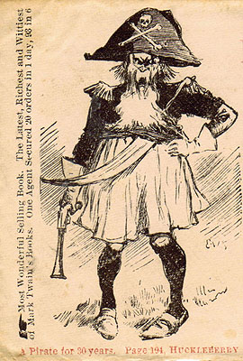

|
 Courtesy Kevin MacDonnell |
The promotional flyer you can see here was designed for two different audiences: subscription agents who were being recruited to sell the book, and readers
who were being enticed to buy it. Both versions -- with and without the illustration -- were sent out by the Occidental Publishing Company in San Francisco, which may have created both. But the flyer's text, which is identical on both versions, was taken directly from the sales prospectus that Charles L. Webster & Co. created in 1884 (as you can see here and here). The only difference is the addition of the final paragraph, with its account
of how well the novel is already selling. It's not known whether MT himself contributed to the text, but as owner of Webster & Co. he probably approved it. Its description of the novel provides one indication of what book agents might have said about Huck Finn when they took it door to
door. There is no way to tell which of these versions was produced first -- or who may have chosen the illustration for the version listed second here. It is, however, interesting to speculate about why the image of the King conning the camp meeting at Pokeville was picked, and displayed so prominently on both the flyer and (left) the envelope in which it was sent out. In the immediate context, i.e. book publishing, "piracy" meant unauthorized publication of copyrighted material, a loss of revenue MT fought hard to prevent. But Occidental was officially designated by Webster & Co. to sell the book in the western U.S. What the text says about Huck Finn is often misleading, but it's hard to imagine they wanted to associate a publisher's publicity with the kind of lying the King does to "sell" his audience. |